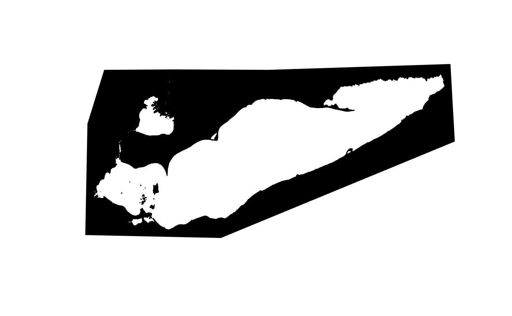
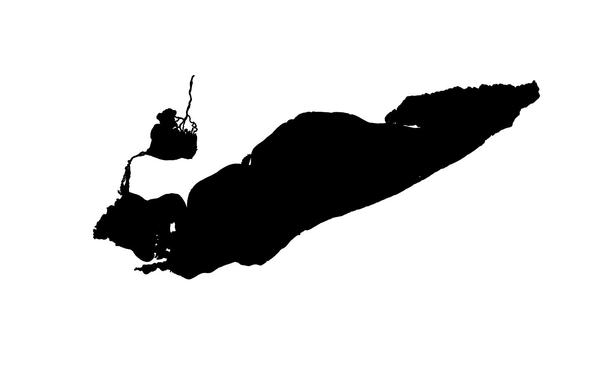

Invert a Polygon
Arguments
- polygon
sf
Polygon defining land boundaries that needs to be inverted.- ratio
numeric [0-1]
Fraction convex, seesf::st_concave_hull(). This may need to be tweaked depending on the form of the polygon to be inverted.
Details
Utility function that inverts a polygon by drawing a concave hull around
polygon (see sf::st_concave_hull()) and then computes the differences
between the polygon and the concave hull (see sf::st_concave_hull()).
Examples
# \donttest{
erie_land <- system.file(
"example", "lake_erie_land", "LkErie_Land_fromGLAF_Water_WGS_Feb2020.shx",
package = "SAVM", mustWork = TRUE
) |> sf::st_read()
#> Reading layer `LkErie_Land_fromGLAF_Water_WGS_Feb2020' from data source
#> `/home/runner/work/_temp/Library/SAVM/example/lake_erie_land/LkErie_Land_fromGLAF_Water_WGS_Feb2020.shx'
#> using driver `ESRI Shapefile'
#> Simple feature collection with 1 feature and 8 fields
#> Geometry type: MULTIPOLYGON
#> Dimension: XYZ
#> Bounding box: xmin: -83.58067 ymin: 41.30372 xmax: -78.72656 ymax: 42.99789
#> z_range: zmin: 0 zmax: 0
#> Geodetic CRS: WGS 84
erie_land |>
sf::st_geometry() |>
plot(col = 1)

erie_land |>
sf::st_geometry() |>
invert_polygon() |>
plot(col = 1)
#> although coordinates are longitude/latitude, st_difference assumes that they
#> are planar

# }